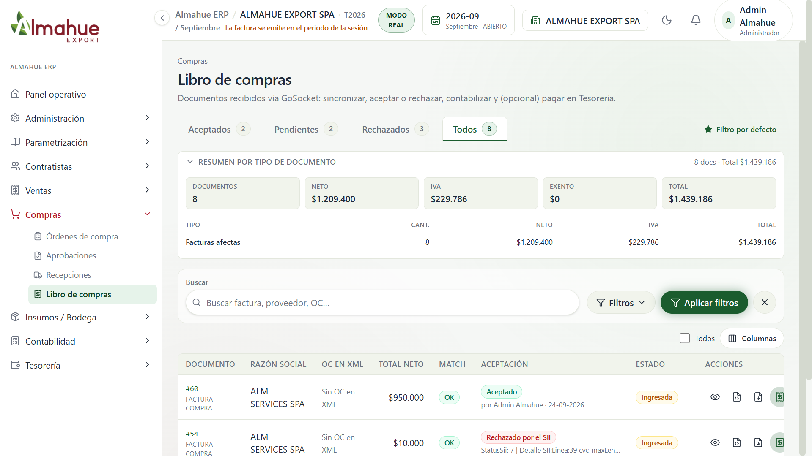
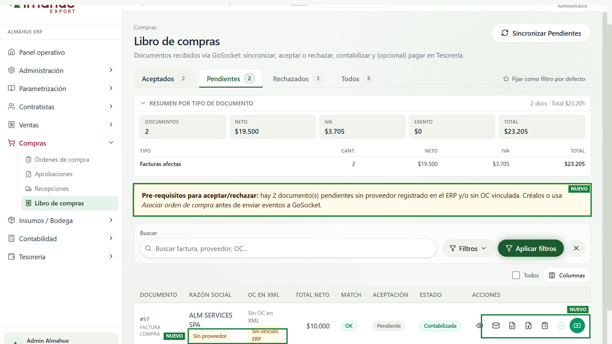
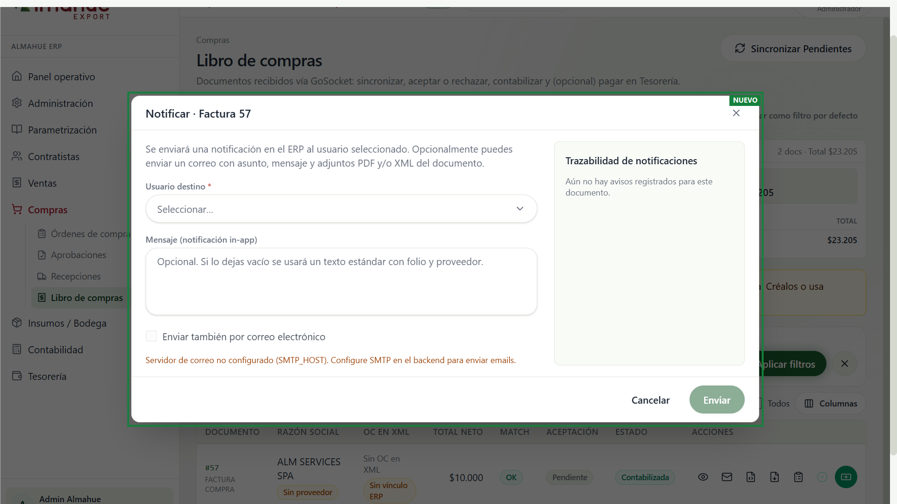
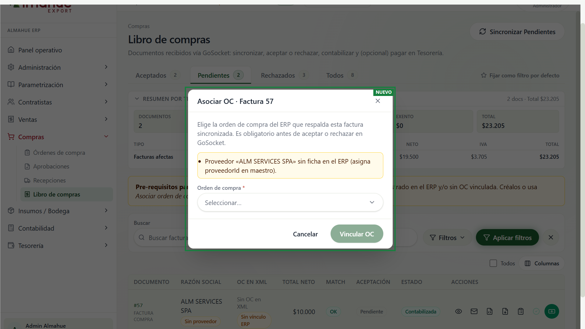

izquierda / derecha: antes y después. + y - : zoom. Esc cierra
01/10/2026. Empresa ALMAHUE EXPORT SPA, modo real, periodo 2026-09. Pantalla 1920x1080 con zoom 120. Nada se guardó, no se vinculó una orden y no se envió un aviso.
Lo de José entró solo en las ramas locales carlos-dev (back, front y billing). No se publicó. Lo que el diagrama de Mario todavía pide, y José no dejó listo, no se construyó.
El recuadro verde y la etiqueta NUEVO van en la foto del después, igual que en las comparaciones del 29/09. La nómina tiene su propio apartado: nómina semanal, antes y después.



El modal elige un usuario del ERP, un mensaje, y un correo opcional con PDF o XML. A la derecha queda la trazabilidad. Hoy el correo avisa que falta SMTP_HOST: el aviso dentro del ERP puede salir igual. No se apretó Enviar. El 23/09 Lupe y Mario pidieron este aviso y el rastro de a quién se le mandó. El diagrama del 29/09, en cambio, deja la asignación en Contabilidad, no en un usuario cualquiera.

El modal pide una orden del ERP antes de aceptar o rechazar en GoSocket. En la factura 57 el proveedor ALM SERVICES SPA no está en el maestro, y el texto muestra la palabra proveedorId: es copia de José, no se corrigió. No se apretó Vincular OC. El diagrama pide que Contabilidad asigne la orden, el monto y el tipo de cambio, y que liste las órdenes de ese proveedor. Eso sigue pendiente.